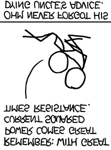
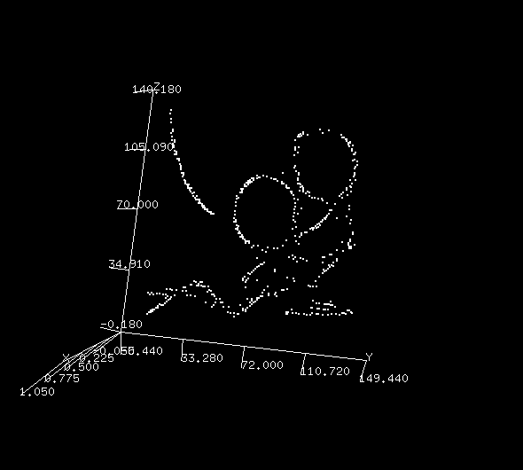
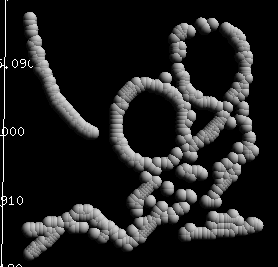

Day 21: Fun and Games with Images
If you are manipulating images, you need PDL!
For years, I've had this urge to use PDL to take a bitmap image and trace the outlines to make an SVG file that I could scale up to A0 poster size without the resulting pixelation. Yes, there are already tools that do that, but where's the fun in that? It's Christmas, the time for Fun and Games!
First, let's grab my favourite image and save it locally.

use PDL::Graphics::Simple
$o = rim('ohm.png')
imag $o
A good sanity check. The first time, I used a deprecated library and got this - oops:

I just want the drawing, so use range and fiddle around a bit until I get the values correct. This should do.
My brilliant plan is to move a window over the image and use the centroid2d function to map out the the darkest parts.
Except that the value of black is 0 and white is 255 and for this trick to work, I need to reverse them.
So, create a new image with $x = 255 - $o->range([50,50],[150,140]) that looks like
After playing around with some code, I settled on this.
use PDL;
use PDL::Graphics::TriD; # points3d
use PDL::Image2D; # centroid3d
my (@points, );
my $o = rim('ohm.png');
my $x = 255 - $o->range([50,50],[150,140]);
my ($cutoff, $imax, $jmax) = (150, $x->dims);
for (my $i = 10; $i < $imax - 10; $i += 2) {
for (my $j = 10; $j < $jmax - 10; $j += 2) {
next unless sum( $x->range([$i-5,$j-5],[10,10]) ) > 510;
next unless $x->at($i-5, $j) < $cutoff
&& $x->at($i+5, $j) < $cutoff
&& $x->at($i, $j-5) < $cutoff
&& $x->at($i, $j+5) < $cutoff;
push @points, [$x->centroid2d($i, $j, 10), 0];
}}
my $s = pdl( @points);
my $t = $s->rotate(1);
points3d($t, {PointSize => 2});
I get this which I'm pretty happy with for a first go:

So how does that work?
After reading in the image, cropping it and reversing the values, I get to the nested loops.
I'm going to loop through all the x,y values leaving a border of 10 pixels where I just won't bother.
Using range, I select a 10x10 window around $i, $j and calculate the sum to make sure that there are at least 2 maximum (255) values inside the window.
Using at, which returns the value at an index,
I make sure that the cardinal points on the window are below a $cutoff value so that a centroid is more likely to be inside the window instead of on the boundary. These are just quick and dirty assumptions to get us closer to the desired result.
Then I push an arrayref of 3 values onto @points (the z value is 0 because we were going 3D).
Finally, I create an ndarray from the points, swap the dimensions with rotate because I prefer to see my image standing up (x->y, y->z)
and plot with points3d.
I must apologise. I switched to TriD's
points3d because
I was using that module earlier this year and when you have a hammer
everything looks like a 3D plot. I had hoped to use the not-brilliant
spheres3d function to give it a bit of volume, but the result looked
a little like the youngest elves' craft projects:

A Christmas miracle
Well, let me tell you that Christmas miracles do happen. I wrote to Santa, (who here is played by Craig DeForest, original author of PDL::Transform::Color and PDL::Graphics::Gnuplot ), and even though it is a very busy time of year for both Santa and Craig, I got a brilliant answer, a beautiful gift for the Solstice that delves into the dark mysteries of broadcasting.
He said, The for loops and $s assignment could be replaced with:
$mc = pdl( [0,5], [10,5], [5,0], [5,10] ); # 2 x 4
$r = $x->range( ndcoords(11,11) - 5, [$o->dims], ‘e’ ); # 11 x 11 x w x h
$s = whichND(
( $r->clump(2)->sumover > 510 ) * # 11 x 11 x w x h --> w x h
( all ( $r->range( $mc,[0,0] ) < $cutoff ) ) # 4 x w x h --> w x h
); # 2 x n
and like any gift that needs a lot of unwrapping.
The Unwrappening
- The
$mcis a 2x4 array that stores the corners of a diamond. Why? - ndcoords gives you a 11x11 box centred on 0.
- I used dims earlier without explaining that it gets the dimensions of the ndarray as a list.
We've seen this before, but range with the e option uses the boundary value for any values that would lie outside of the ndarray.
This gives us $r which has four dimensions, 11 x 11 x width x height of the original image.
You're essentially creating an attached subsection to the image to use as a temporary work space, making the 2D image 4 dimensional.
Takes a bit of getting your head around how this works
I will leave whichND and clump for another time.
sumover takes the sum along the first dimension. It produces an ndarray with the same dimensions as $o, the original image.
In conditional expressions, all returns true if all elements in the ndarray are less than $cutoff Hmmm. Is this where I'm going wrong? The [0,0] is the boundary option to range which forbids the range crossing the boundary.
It'd be nice to see a list of cases where you would want to use each of those boundary options so I'd have a better idea of which one I need each time.
Wrapping up
Unfortunately, this is not a drop-in solution here because no elements satisfy the conditions and I don't know why ... yet! I am a Bear of Very Little Brain. Working that out will take about 12 days for me to understand, especially the bit where we go into the 4th dimension!
Craig's original suggestion for an advent post was about manipulating images based on a moving window, which sounds a lot like how you might do convolution by hand. More presents under the tree, but that will have to do for today. I'm bushed and will now say auf wiedersehen, adieu.
Just time for a Public Service Announcement:
As everyone knows, Santa lives in Canada, so please remember to use the correct Postal Code, H0H 0H0.
Joyeux Noël
Alternative Energy Revolution by Randall Monroe is licensed under Creative Commons Attribution-NonCommercial 2.5 License.

Boyd Duffee
Boyd has wanted to learn PDL for many years and realizing that dream is bringing him joy. He has done mad things to Complex Networks with NLP and is moving on to DSP and Time Series Analysis. He's interested in Data Science, Complex Networks and walks in the woods.